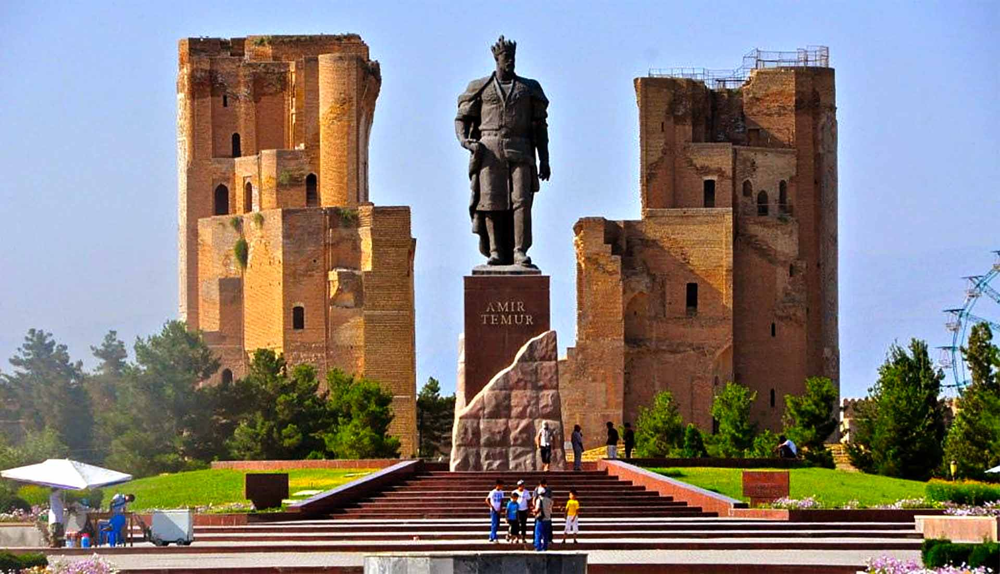
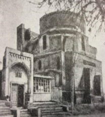
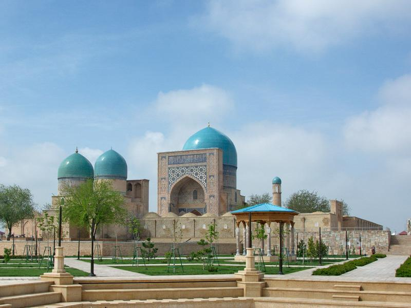
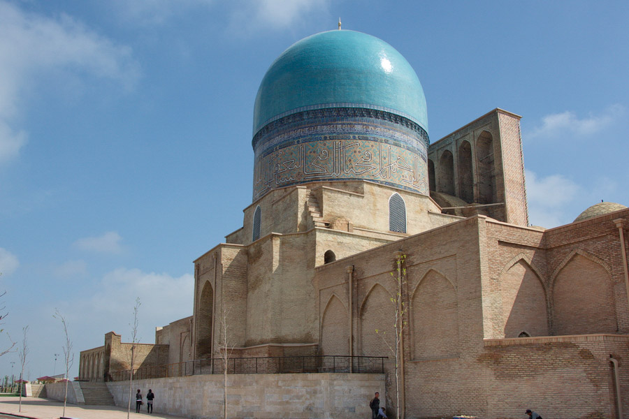
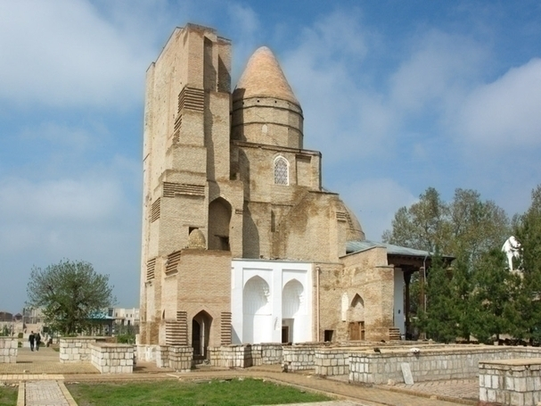

Shahrisabz - Amir Temurning vatani
Shahrisabz — Amir Temur shahri, bu yerda hamma narsa u yoki bu tarzda uning nomi bilan bog'liq. Bu yerda uning otasi Muhammad Tarag'ay va ma'naviy ustozi Shamsiddin Kulol ko'milganlar, bu yerda uning katta o'g'illari Jahongir Mirzo va Umarshayx Mirzolar go'ri joylashgan. Ulug' Sohibqironning o'zi ham uning joni shu yerda arshi a'loga uchib ketadi, deb o'ylagan edi. Hattoki maqbarani ham tayyorlab qo'ydi. Lekin taqdir buni boshqacha hal etdi…

Ulkan Movarounnahr davlatini yaratgan va uning cheklanmagan hukmroni - amiri bo'lgan Temur Samarqandni o'z poytaxti sifatida tanladi. Lekin o'zining tug'ilib o'sgan kichik vatanini ham hech qachon unutmay, doimo unga g'amxo'rlik qildi. Aslida Shahrisabz davlatning ikkinchi poytaxti edi. Temurning avlodi, Buyuk Mo'g'ullar sulolasining asoschisi Bobur yozishicha: «Kesh shahri Temurbekning tug'ilgan joyi bo'lgani uchun, u shaharni taxt zainiga aylantirish uchun ko'p gamho'rlik qilgan edi». Amirning buyrug'i bilan bu yerga eng yaxshi me'morlar quruvchilar, me'morchilik bezaklarining ustalari yuborilgan, mahalliy ustalar bilan birgalikda ular turli mamlakatlarning tajribasi va an'analarini uyg'unlashtirib, ulug'vor binolarni barpo etganlar. Ularning ijodi bilimlar, tajriba, an'analar va yaratuvchilik urinishlarining yaxlitlashuvi tufayli ajoyib mevalar berdi, ular XIV asr oxiri – XV asr boshi O`rta Osiyo me'morchiligning xususiyatlarini belgilab bergan monumental uslubning asoslarini yaratdilar.

Oqsaroy saroyi bayramona hukumat binosi – rezidentsiyaning namunasi bo'lishi mumkin. Saroyning qurilishi 1380 yilda boshlangan, lekin 1404 yilda ham unda pardoz ishlari tugatilayotgan edi. Bu ulug'vor inshootning o'qsimon gumbazi oralig'i 22 metrdan ortiq bo'lib, temuriylar barpo etgan barcha inshootar orasida eng antiqadir.
Temur va temuriylarning davrida shahrlarning ansambllar bilan – majmuiy qurilishi keng tarqalgan.
Bu Shahrisabzda ham yaqqol ko'rinadi, bu yerda Dorus-Tilovat va Dorus-Saodat ansambllari ajralib turadi.
Dorus-Tilovatni sobiq mahalliy xodagonlar maqbarasida saqlanib qolgan uchta inshoot tashkil etadi.
Bu Shamsiddin Kulol va Gumbazi Seyidon maqbaralari hamda Ko'k-Gumbaz jome' masjidi inshootlaridir.
Shamsiddin Kulol maqbarasi eng birinchi qurilgan. Shayx 1370 yilda vafot etgan bo'lib, uning go'ri
izzat-ehtirom qilingan edi.

Uning yonida Gumbazi Seyidon – Sayidlar gumbazi nomli Ulug'bek avlodlarining maqbarasi qurilgan. Bu kichik bino o'zining nafis mutanosibligi va chuqur o'ymakor naqshlar bilan qoplangan, ajoyib ishlangan kirish eshigi bilan insonni mahliyo qiladi. Me'morchilik ansamblini mo'g'ullargacha bo'lgan qurilish poydevorida qad ko'targan Ko'k-Gumbaz jome' masjidi tugallaydi.

Dorus-Saodat ansambli ham uchta qismidan iborat: Jahongir mirzoning go'ri, Hazrati Imom masjidi va Temurnig maqbarasi. 1376 yilda sohibqironning sevimli o'g'li Jahongir mirzo o'lganidan keyin Amir Temur shunday qayg'uga cho'mdiki, «sohibqironning qalbi hamdardlik uchun 30 yil yopiq edi». «Adolatli shahzoda, jasur jangchi, yer yuzida atirguldek ir ko'rinib yo'qolgan» shahzodaning jasadi ajdodlariing vataniga keltirildi, bu yerda uning uchun maqbara qurildi. Keyinroq maqbara oilaviy katta maqbara ichiga kiritilgan edi. Xona ohaktosh bilan qoplangan bo'lib, arkali o'yma tokchalar bo'ylab Qur'ondan olinagn foniy dunyoning bekorligi va boqiy dunyoning g'olibligi to'g'risidagi oyatlar o'yib ishlangan. Masjid va Jahongirning maqbarasiga yaqin joyda faqat Temur uchun mo'ljallangan go'r saqlanib qolgan maqbara bo'lgan, lekin uning o'zi, ma'lumki, Samarqandda dafn etilgan.

Lekin Shahrisabz faqatgina buyuk amirning «taxt zamini» bo'lmagan. Temurning tug'ilishidan ancha ilgari u o'z tarixiga ega edi. Avvalo bu jahonnig eng qadimgi shaharlaridan biri. Olimlarning fikricha, Shahrisabz 2700 yoshda, bu esa «Boqiy shahar» Rimning yoshidir. YuNESKO qaroriga ko'ra aynan shu sana 2002 yilda butun madaniy dunyoda nishonlangan. Eramizdan avvalgi IV asrda iskandar Zulqarnayn lashkarlari dam olish uchun Kesh vohasida to'xtagan, Baqtriyaning satrapi bo'lgan Bess Doro III in o'ldirib, o'zini «osiyo podshohi» deb e'lon Kilgan, lekin uning o'zi aynan shu yerda asirga olingan. VII asrda shaharni arablar qamal qilgan, bir asr keyin esa Kesh shahri Muqanna rahbarligi ostida arablarga qarshi kuchli qo'zg'olonning markazi bo'ldi. Tinch davrda shahar hech qanday to'sqinliksiz o'sib rivojlanar edi, bunga uning gavjum Buyuk Ipak yo'lidagi nihoyatda qulay joylashuvi sabab bo'lgan.